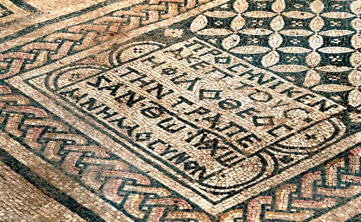

Megiddo Church

A third-century Christian meeting hall uncovered in 2005 during construction work at Megiddo Prison, excavated by Yotam Tepper. Its mosaic floor carries a Greek inscription 'to God Jesus Christ,' alongside the names of donors including a Roman centurion — the earliest known church building in Israel and one of the earliest written confessions of Christ's divinity.
Biblical Significance
Within two hundred years of the resurrection, believers — including a Roman officer — were meeting in a plain hall and writing on the floor that Jesus is God. Long before creeds and councils, the church's faith was already carved in stone: not merely a good teacher, but God himself, worthy of an offering table.
Interpretations
Scholars agree the hall and its ‘God Jesus Christ’ mosaic are third-century; the building’s identification as a church (rather than a prayer hall) rests on the inscription and the table’s likely use.